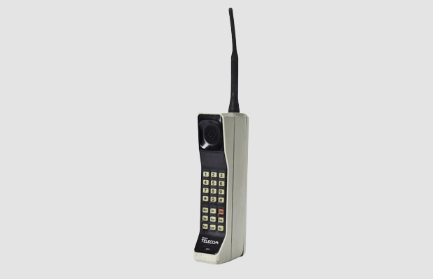
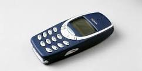
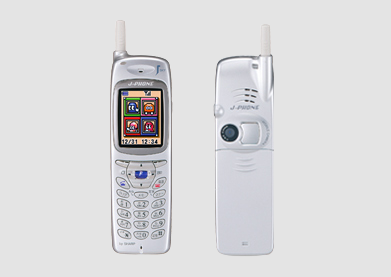
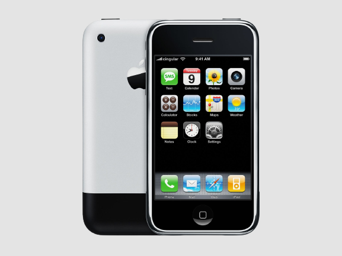

Smartphone atau ponsel pintar menjadi salah satu gadget yang kian populer setiap tahunnya. Bahkan, kini semua orang sudah
mulai menjadikan smartphone sebagai salah kebutuhan pokok. Mulai dari anak-anak yang masih duduk di bangku Sekolah
Dasar hingga orang dewasa sudah memiliki gadget satu ini.Banyaknya merk dan tipe smartphone murah,menjadi salah satu
faktor penunjang mengapa gadget satu ini begitu populer. Sebagai pengguna smartphone, pernahkah Anda bertanya-tanya
kapan kemunculan perdana dari ponsel? Jika pertanyaan tersebut terbesit dalam benak Anda, simak ulasan berikut mengenai
sejarah perkembangan ponsel dari awal kemunculannya hingga saat ini.
HANDPHONE TAHUN 80

10 tahun setelah munculnya Motorola DynaTAC, tahun 1983 kembali muncul ponsel generasi terbaru, yakni Motorola DynaTAC 8000X. Berbeda dengan Motorola DynaTAC tahun 1973,
ponsel terbaru ini menjadi ponsel pertama yang secara resmi dikomersialkan. Masyarakat sudah bisa ikut menggunakannya sebagai media komunikasi. Meski sudah mengalami beberapa
pembaharuan, namun ponsel ini masih memiliki bobot yang cukup besar, sekitar 793 gram.
Baterai yang disematkan pada Motorola DynaTAC 8000X bisa beroperasi selama 8 jam lamanya. Sebagai ponsel yang pertama kali diperjualbelikan, tidak heran jika harganya pun sangat mahal,
yakni sekitar 4.000 dolar AS. Hal ini tidaklah mengagetkan mengingat ponsel pada awal kemunculannya memang hanya diperuntukkan untuk kalangan menengah ke atas saja.
Tak berhenti disitu saja, tahun 1980-an, Motorola terus melakukan riset dan pembaharuan pada produknya. Merk ponsel satu ini kembali merilis ponsel baru yang diklaim lebih user friendly.
Ponsel yang disebut dengan Motorola MicroTAC 9800X ini juga memiliki bobot yang lebih ringan. Sehingga akan lebih nyaman jika ingin dibawa bepergian.
Sementara bobotnya mengalami penurunan hingga 300 gram, baterai Motorola MicroTAC 9800X hanya bisa bertahan selama 30 menit saja. Meski memiliki ketahanan sangat buruk jika dibandingkan
dengan ponsel saat ini, namun kemunculan generasi terbaru Motorola ini masih disambut hangat masyarakat. Uniknya lagi, ponsel baru ini juga sudah dilengkapi dengan antena berbahan plastik. Hanya saja,
kehadiran antena ini tak memiliki fungsi yang berarti dan hanya sebagai pemanis.
HANDPONE TAHUN 90

Dibandingkan dengan ponsel generasi 70-an dan 80-an, ponsel yang muncul di era 90-an sudah bisa dipastikan lebih canggih.
Perkembangan dan pembaharuan terus dilakukan oleh para perusahaan telekomunikasi. Bahkan, untuk pertama kalinya muncul
sebuah ponsel yang bisa digunakan untuk melakukan panggilan telepon. Tapi jangan harap jika Anda bisa menggunakan ponsel ini untuk berselancar di dunia maya.
Selain bisa digunakan untuk menerima dan melakukan panggilan telepon, ponsel yang muncul di tahun 1992 juga bisa Anda gunakan
untuk mengirim pesan singkat berupa SMS. Di tahun yang sama, muncul IBM Simon yang disebut-sebut sebagai ponsel pintar (smartphone)
pertama di dunia. Smartphone ini bisa Anda gunakan untuk telepon, mesin fax, pager, dan Personal Digital Assistant (PDA).
Di era 90-an ini juga nama Nokia mulai dikenal masyarakat. Kehadirannya pun langsung menyaingi kejayaan dari Motorola. Tidak tanggung-tanggung,
Nokia langsung merilis beberapa tipe ponsel yang bisa Anda pilih di tahun 1990-an. Nokia 3210 menjadi salah satu seri ponsel Nokia yang paling laris di pasaran.
Tak butuh waktu lama, sebanyak 160 juta perangkat Nokia sudah habis terjual di pasaran. Bahkan, tak sedikit juga masyarakat Indonesia yang ikut meramaikan perilisan Nokia 3210.
HANDPHONE SEMAKIN CANGGIH

Istilah smartphone atau ponsel pintar semakin populer di era ini. Bagaimana tidak, munculnya Sharp J-SH04
semakin menarik perhatian masyarakat. Pasalnya, ponsel pintar ini sudah dilengkapi dengan kamera di dalamnya Ya
Sharp J-SH04 merupakan ponsel pertama di dunia yang membuat penggunanya bisa memotret foto.
Tidak berhenti disitu saja, ponsel ini juga sudah dilengkapi dengan berbagai macam fitur canggih di dalamnya lho.
Setelah Sharp J-SH04, mulai bermunculan merk ponsel lainnya yang tidak kalah canggih,
sebut saja salah satunya yakni Blackberry 5810. Berbeda dengan ponsel yang sebelumnya sudah rilis,
ponsel satu ini sudah terkoneksi dengan jaringan internet secara penuh. Bahkan, Anda hanya bisa menggunakan
ponsel ini secara maksimal jika tersambung oleh jaringan internet.
Di tahun ini juga mulai muncul smartphone legendaris milik Apple, yakni iPhone. Kemunculan merk smartphone
mahal ini disambut baik oleh masyarakat, khususnya mereka yang berada di kalangan menengah ke atas.
Bagaimana tidak, kemunculan iPhone menyuguhkan konsep baru, yakni smartphone layar sentuh.
Konsep ini berbeda dibandingkan merk ponsel lainnya yang masih mengusung konsep keypad.
HANDPONE TERKINI

Kemunculan iPhone di tahun 2007 ini, membuat ponselnya bisa digunakan untuk mengakses jaringan internet 3G.
Dengan mengandalkan koneksi jaringan 3G, para pengguna iPhone bisa dengan leluasa berselancar di dunia maya.
Tak berselang lama setelah munculnya iPhone dengan sistem operasi iOS, masyarakat kembali disuguhkan dengan
perangkat baru berbasis Android oleh HTC. Kesuksesan cmembuat merk ponsel lainnya mulai
berbondong-bondong merilis smartphone berbasis Android.
Di era ini juga, kecepatan jaringan internet juga semakin tinggi saja. Para pengguna smartphone kini bisa menikmati
internet yang lebih kencang pada jaringan 4G. Namun, penggunaan jaringan 4G hanya bisa diakses oleh
smartphone yang mendukung saja. Tidak berhenti disitu saja, akhir era tahun 2010-an juga sudah banyak
bermunculan perangkat yang mendukung jaringan 5G. Bisa jadi Anda salah satunya yang sudah bisa mengakses
internet di jaringan 5G?
Selain mengalami peningkatan pada kualitas layar sentuh dan juga jaringan, smartphone terbaru akhir-akhir ini juga
telah menawarkan banyak kelebihan di berbagai aspek lainnya. Mulai dari kapasitas baterai yang awet dengan
teknologi fast charging, kapasitas RAM dan ROM yang besar, hingga prosesor yang sangat kencang.
Itu tadi perkembangan sejarah ponsel dari tahun ke tahun yang selalu mengalami peningkatan.